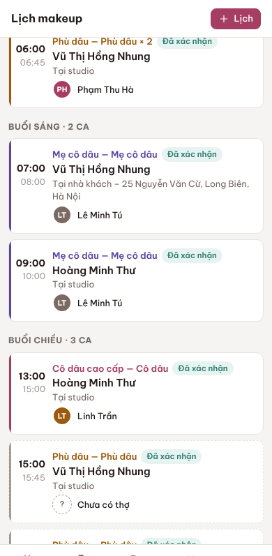

<!doctype html>
<html lang="vi">
<head>
<meta charset="utf-8">
<meta name="viewport" content="width=device-width, initial-scale=1">
<meta name="ten" content="R&D 06 — App iPhone">
<title>App iPhone — R&D 06</title>
<!-- Bản mẫu R&D vòng 6 — ba hướng đưa Makeup Pro lên iPhone.
     Khung iPhone (thanh trạng thái, màn hình chủ, màn khoá) là HÌNH VẼ GIẢ LẬP để chụp ảnh minh hoạ, không phải ảnh chụp máy thật.
     Ảnh "that-web-*.png" là ảnh THẬT của bản web hiện có: that-web-dang-nhap.png chụp bản build apps/web/dist ở khổ 390×797
     (chiều cao màn trừ thanh trạng thái, đúng như khi chạy ở chế độ "đứng riêng"); that-web-lich.png cắt từ
     docs/nghiem-thu/bai-thu-lan-4/MOI-ca-cua-dong-da-huy-390.png.
     Chỗ khác (màn hướng dẫn cài, Face ID, mất mạng, widget, lịch kiểu app riêng) là bản mẫu dùng token họ C. -->
<link rel="stylesheet" href="v4-chung/v4.css">
<link rel="stylesheet" href="v6-chung/v6.css">
</head>
<body>
<script src="v4-chung/v4.js"></script>
<script>
(function () {
const I = V4.icon;
const SIG = '<svg viewBox="0 0 18 12"><rect x="0" y="8" width="3" height="4" rx="1" fill="currentColor"/><rect x="5" y="5.5" width="3" height="6.5" rx="1" fill="currentColor"/><rect x="10" y="3" width="3" height="9" rx="1" fill="currentColor"/><rect x="15" y="0" width="3" height="12" rx="1" fill="currentColor"/></svg>';
const WIFI = '<svg viewBox="0 0 18 12"><path d="M9 11.5l2.4-2.9a3.6 3.6 0 00-4.8 0z M9 4.6c2 0 3.8.7 5.2 2l1.5-1.8A10 10 0 009 2.1a10 10 0 00-6.7 2.7l1.5 1.8c1.4-1.3 3.2-2 5.2-2z" fill="currentColor"/></svg>';
const BAT = '<svg viewBox="0 0 27 12" style="width:27px"><rect x=".5" y=".5" width="23" height="11" rx="3" fill="none" stroke="currentColor" opacity=".45"/><rect x="2" y="2" width="17" height="8" rx="1.8" fill="currentColor"/><rect x="24.8" y="4" width="1.6" height="4" rx=".8" fill="currentColor" opacity=".45"/></svg>';
const sb = (light, t) => `<div class="ip-sb${light ? ' light' : ''}"><span>${t || '9:41'}</span><span class="r">${SIG}${WIFI}${BAT}</span></div>`;
const home = (light) => `<div class="ip-home${light ? ' light' : ''}"></div>`;
const PEN = '<svg viewBox="0 0 24 24" fill="none" stroke="currentColor" stroke-linecap="round" stroke-linejoin="round"><path d="M14 3l7 7-9 9H5v-7z"/><path d="M11 6l7 7"/></svg>';
const LOGO = 'v3-mau-chao-mung/chung/logo-mau.svg';
const icMP = (lbl) => `<div class="ip-app"><div class="ip-ico mp" style="position:relative">${PEN}</div>${lbl || 'Makeup Pro'}</div>`;
const icAC = `<div class="ip-app"><div class="ip-ico ac"></div>Chiến Academy</div>`;
const icG = (t, c) => `<div class="ip-app"><div class="ip-ico" style="background:${c || '#5A4B47'}"></div>${t}</div>`;
const OTHERS = [['Điện thoại', '#4E6B5A'], ['Tin nhắn', '#4E6B5A'], ['Ảnh', '#6B5A4E'], ['Máy ảnh', '#55504C'], ['Lịch', '#6A5550'], ['Ghi chú', '#6B634A'], ['Bản đồ', '#4E5E6B'], ['Đồng hồ', '#45403E'], ['Cài đặt', '#55504C'], ['Thời tiết', '#4E5E6B']];

// ---------- Từng màn (trả về phần bên trong khung 390×844) ----------
const S = {};
S.huongDan = () => `<div class="ip" style="background:var(--bg)">${sb()}
<div style="position:absolute;top:47px;left:0;right:0;bottom:0;overflow:hidden">
 <div class="pt-top" style="position:static"><span class="ip-ico mp" style="width:32px;height:32px;border-radius:8px;display:grid;place-items:center">${PEN.replace('<svg', '<svg style="width:18px;height:18px;color:var(--accent);stroke-width:2"')}</span><div class="brand2">Cài Makeup Pro lên iPhone<small>Mở như một app, không cần App Store</small></div></div>
 <div style="padding:16px" class="stack">
  <div class="bn yel">${I('warn', 's')}<span><b>Đang mở trong Zalo?</b> Bấm nút ••• góc phải trên → <b>Mở bằng trình duyệt</b>. Trong Zalo không cài được.</span></div>
  <div class="card"><div class="cb" style="padding:6px 16px 8px">
   <div class="ins"><span class="dot" style="border-color:var(--accent);color:var(--accent);font-weight:700;font-size:12px">1</span><div><div class="n">Mở trang bằng Safari</div><div class="d">Địa chỉ: app.makeuppro.vn (tên miền ví dụ)</div></div><span></span></div>
   <div class="ins"><span class="dot" style="border-color:var(--accent);color:var(--accent);font-weight:700;font-size:12px">2</span><div><div class="n">Bấm nút Chia sẻ ${I('up', 's')}</div><div class="d">Ô vuông có mũi tên lên, ở thanh dưới của Safari</div></div><span></span></div>
   <div class="ins"><span class="dot" style="border-color:var(--accent);color:var(--accent);font-weight:700;font-size:12px">3</span><div><div class="n">Chọn "Thêm vào MH chính"</div><div class="d">Kéo danh sách xuống nếu chưa thấy, rồi bấm <b>Thêm</b></div></div><span></span></div>
   <div class="ins"><span class="dot" style="border-color:var(--accent);color:var(--accent);font-weight:700;font-size:12px">4</span><div><div class="n">Mở bằng biểu tượng mới</div><div class="d">Đăng nhập một lần, rồi bấm <b>Bật thông báo</b> để nhận ca mới</div></div><span></span></div>
  </div></div>
  <div class="card"><div class="cb" style="padding:14px 16px;display:flex;gap:12px;align-items:center"><div class="ip-ico mp" style="width:52px;height:52px;border-radius:12px">${PEN.replace('<svg', '<svg style="width:28px;height:28px;color:var(--accent);stroke-width:2"')}</div><div><b>Biểu tượng trên màn hình chính</b><div class="muted small">Tên "Makeup Pro", mở toàn màn hình, không có thanh địa chỉ</div></div></div></div>
  <p class="fx">Cần iPhone chạy iOS 16.4 trở lên để nhận thông báo. Máy cũ hơn vẫn cài được, chỉ không có thông báo.</p>
 </div></div>${home()}</div>`;

S.manHinhChu = (widget) => `<div class="ip"><div class="ip-wall"></div>${sb(true)}
<div class="ip-grid">${widget ? `<div class="ip-widget"><b>Hôm nay · 3 ca</b><div class="it">06:00 Phù dâu<br><span class="muted">Vũ Thị Hồng Nhung</span></div><div class="it" style="border-color:#5B45A0">07:00 Mẹ cô dâu<br><span class="muted">Tại nhà · Long Biên</span></div><div class="muted" style="margin-top:auto">+1 ca chiều</div></div>` : ''}
${widget ? `<div class="ip-app"><div class="ip-ico mp" style="position:relative">${PEN}<span class="ip-badge">2</span></div>Makeup Pro</div>` : icMP()}${widget ? '' : icAC}
${OTHERS.slice(0, widget ? 6 : 10).map(([t, c]) => icG(t, c)).join('')}</div>
<div class="ip-dock">${icG('', '#4E6B5A').replace('</div></div>', '</div></div>')}${icG('', '#4E5E6B')}${icG('', '#6B5A4E')}${icG('', '#55504C')}</div>${home(true)}</div>`;

S.moRieng = (img) => `<div class="ip" style="background:#fff">${sb()}<div class="ip-shot"></div>${home()}</div>`;

S.thongBao = () => `<div class="ip"><div class="ip-lock"></div>${sb(true)}
<div style="position:absolute;inset:0;color:#fff"><div class="date" style="position:absolute;top:70px;left:0;right:0;text-align:center;font-size:18px;font-weight:500">Thứ Sáu, 13 tháng 11</div>
<div style="position:absolute;top:96px;left:0;right:0;text-align:center;font-size:84px;font-weight:600;line-height:1">9:41</div></div>
<div class="ip-noti" style="top:250px"><span class="ico">${PEN}</span><div class="h">Makeup Pro <small>bây giờ</small></div><div><b>Ca mới cho chị</b>: 06:00 Thứ Bảy 14/11 — Phù dâu, Vũ Thị Hồng Nhung, tại studio.</div><div class="s">Bấm để mở lịch</div></div>
<div class="ip-noti" style="top:366px;opacity:.92"><span class="ico" style="background:#fff"></span><div class="h">Chiến Academy <small>2 giờ trước</small></div><div><b>Nhắc học phí</b>: Đợt 2 — 5.000.000 ₫, hạn 17/11.</div><div class="s">Cổng học viên</div></div>
<div class="ip-cap">Thông báo từ web đã cài lên màn hình chính: iOS 16.4 trở lên, người dùng phải bấm "Cho phép". Tài liệu Apple (WWDC 2022): không cần tài khoản Apple Developer.</div>${home(true)}</div>`;

S.matMang = () => `<div class="ip" style="background:#fff">${sb()}<div class="ip-shot"></div>
<div style="position:absolute;top:47px;left:0;right:0;z-index:4" class="bn grey">${I('clock', 's')}<span><b>Mất mạng</b> — đang xem lịch đã lưu lúc 07:12. Sửa được khi có mạng lại.</span></div>
<div class="ip-cap">Hướng 2 (bọc Capacitor): phải thêm phần "giống app" như màn này, Face ID, lưu ảnh vào Ảnh — để không bị từ chối vì "chỉ là trang web đóng gói" (mục 4.2).</div>${home()}</div>`;

S.faceId = () => `<div class="ip" style="background:var(--bg)">${sb()}
<div style="position:absolute;top:150px;left:24px;right:24px;text-align:center" class="stack">
 <div class="ip-ico mp" style="width:76px;height:76px;border-radius:18px;margin:0 auto">${PEN.replace('<svg', '<svg style="width:40px;height:40px;color:var(--accent);stroke-width:2"')}</div>
 <h1 style="font-size:22px">Makeup Pro</h1><p class="muted">Studio Chiến · Nguyễn Trọng Chiến</p>
 <div style="width:84px;height:84px;margin:24px auto 8px;border:2px solid var(--accent);border-radius:22px;display:grid;place-items:center;color:var(--accent)">${I('lock').replace('class="i"', 'class="i" style="width:40px;height:40px;stroke-width:1.6"')}</div>
 <p>Nhìn vào máy để mở khoá bằng Face ID</p>
 <button class="btn full" style="margin-top:18px">Dùng mật khẩu</button>
</div>
<div class="ip-cap">Chỉ app thật (hướng 2, 3) mới khoá được bằng Face ID. Web cài lên màn hình chính dùng đăng nhập thường.</div>${home()}</div>`;

S.lichRieng = () => {
  const ca = [['06:00', '06:45', 'Phù dâu × 2', 'Vũ Thị Hồng Nhung', 'Tại studio', 'Phạm Thu Hà', '#9A5B0F'], ['07:00', '08:00', 'Mẹ cô dâu', 'Vũ Thị Hồng Nhung', 'Tại nhà · Long Biên', 'Lê Minh Tú', '#5B45A0'], ['13:00', '15:00', 'Cô dâu cao cấp', 'Hoàng Minh Thư', 'Tại studio', 'Linh Trần', '#A63D62']];
  return `<div class="ip" style="background:var(--bg)">${sb()}
<div style="position:absolute;top:47px;left:0;right:0;bottom:83px;overflow:hidden;padding:4px 16px">
 <div class="row" style="justify-content:space-between"><h1 style="font-size:32px;font-weight:700">Lịch</h1><span class="btn icon pri" style="border-radius:50%">${I('plus', 's')}</span></div>
 <div style="display:grid;grid-template-columns:repeat(7,1fr);text-align:center;margin:10px 0 14px;font-size:12px;color:var(--muted)">${['T2', 'T3', 'T4', 'T5', 'T6', 'T7', 'CN'].map((d, i) => `<div>${d}<div style="margin:4px auto 0;width:34px;height:34px;border-radius:50%;display:grid;place-items:center;font-size:16px;font-weight:600;${i === 5 ? 'background:var(--accent);color:#fff' : 'color:var(--text)'}">${9 + i}</div></div>`).join('')}</div>
 <div class="lh" style="background:none;border:0;padding:0 0 8px">Thứ Bảy 14/11 · 3 ca</div>
 <div class="stack" style="gap:10px">${ca.map(([a, b, k, n, w, t, c]) => `<div class="card" style="border-left:4px solid ${c};padding:12px 14px;display:grid;grid-template-columns:52px 1fr;gap:4px 12px"><div><b>${a}</b><div class="faint small">${b}</div></div><div><div style="color:${c};font-weight:600;font-size:13px">${k}</div><div class="b">${n}</div><div class="muted small">${w}</div><div class="who" style="margin-top:6px">${V4.av(t, false, 'xs')}<span class="small">${t}</span></div></div></div>`).join('')}</div>
</div>
<div style="position:absolute;left:0;right:0;bottom:0;height:83px;background:rgba(255,255,255,.96);border-top:1px solid var(--line);display:grid;grid-template-columns:repeat(4,1fr);padding-top:8px">${[['lich', 'Lịch', 1], ['hd', 'Hợp đồng'], ['khach', 'Khách'], ['more', 'Thêm']].map(([i, t, on]) => `<div style="display:flex;flex-direction:column;align-items:center;gap:3px;font-size:10.5px;color:${on ? 'var(--accent)' : 'var(--muted)'};font-weight:${on ? 600 : 400}">${I(i)}${t}</div>`).join('')}</div>
<div class="ip-cap" style="bottom:96px">Hướng 3 (app riêng): vẽ lại từng màn bằng thành phần của iPhone — tiêu đề lớn, thanh tab hệ thống, vuốt để đổi ngày.</div>${home()}</div>`;
};

// ---------- Mục lục ----------
V4.mucLuc('R&D 06 — App iPhone: ba hướng', 'Khung iPhone là hình vẽ giả lập. Ảnh trong khung ở các màn "pwa-mo", "pwa-lich" là ảnh thật của bản web hiện có.', [
  ['Hướng 1 — Web cài lên màn hình chính (PWA)', [['pwa-huong-dan', 'Màn hướng dẫn cài (trong app)', ''], ['pwa-mhc', 'Màn hình chủ sau khi cài', 'Makeup Pro + Cổng học viên'], ['pwa-mo', 'Mở từ biểu tượng — bản web THẬT', 'trang đăng nhập hiện có'], ['pwa-lich', 'Lịch — bản web THẬT', ''], ['pwa-thong-bao', 'Thông báo trên màn khoá', 'iOS 16.4+']]],
  ['Hướng 2 — Bọc web bằng Capacitor (lên App Store)', [['cap-faceid', 'Mở khoá bằng Face ID', ''], ['cap-mat-mang', 'Mất mạng vẫn xem lịch đã lưu', '']]],
  ['Hướng 3 — Viết app riêng', [['nat-lich', 'Lịch kiểu iPhone', ''], ['nat-widget', 'Widget trên màn hình chủ', '']]],
  ['So sánh', [['so-sanh', 'Ba hướng cạnh nhau (khổ 1440)', '']]],
]);
const M = (id, title, html) => V4.man(id, { shell: 'none', title }, html);
M('pwa-huong-dan', 'Hướng dẫn cài', S.huongDan());
M('pwa-mhc', 'Màn hình chủ', S.manHinhChu(false));
M('pwa-mo', 'Mở từ biểu tượng', S.moRieng('that-web-dang-nhap.png'));
M('pwa-lich', 'Lịch (web thật)', S.moRieng('that-web-lich.png'));
M('pwa-thong-bao', 'Thông báo', S.thongBao());
M('cap-faceid', 'Face ID', S.faceId());
M('cap-mat-mang', 'Mất mạng', S.matMang());
M('nat-lich', 'Lịch app riêng', S.lichRieng());
M('nat-widget', 'Widget', S.manHinhChu(true));
M('so-sanh', 'So sánh ba hướng', `<div style="background:var(--bg);min-height:100vh"><div class="ba">
 <div><div class="cap"><b>1 · Web cài lên màn hình chính</b><span>Không cần Apple · cài qua Safari · 0 đồng thêm</span></div>${S.moRieng('that-web-lich.png')}</div>
 <div><div class="cap"><b>2 · Bọc web bằng Capacitor</b><span>Lên App Store · 99 USD/năm · phải thêm phần "giống app"</span></div>${S.matMang()}</div>
 <div><div class="cap"><b>3 · Viết app riêng</b><span>Đẹp nhất, có widget · tốn công gấp nhiều lần</span></div>${S.manHinhChu(true)}</div>
</div></div>`);
V4.boot();
})();
</script>
</body>
</html>
